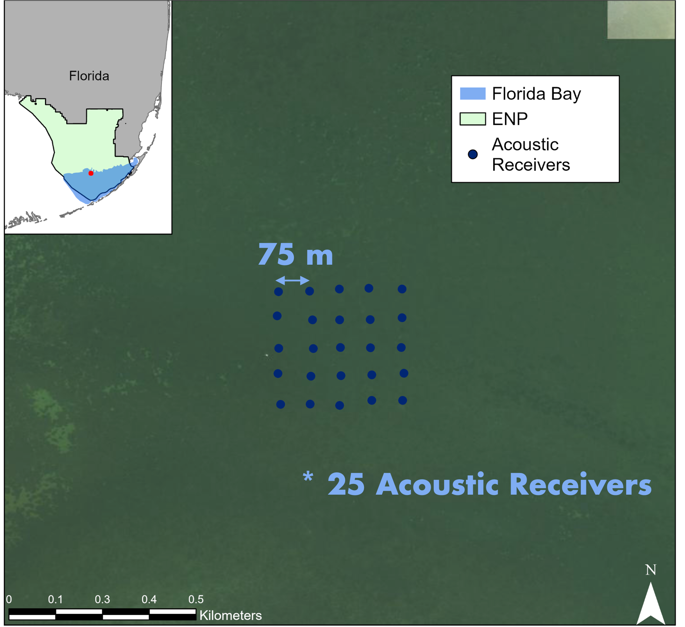
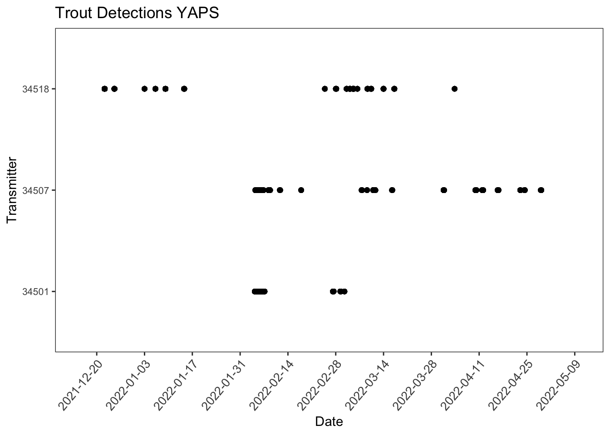
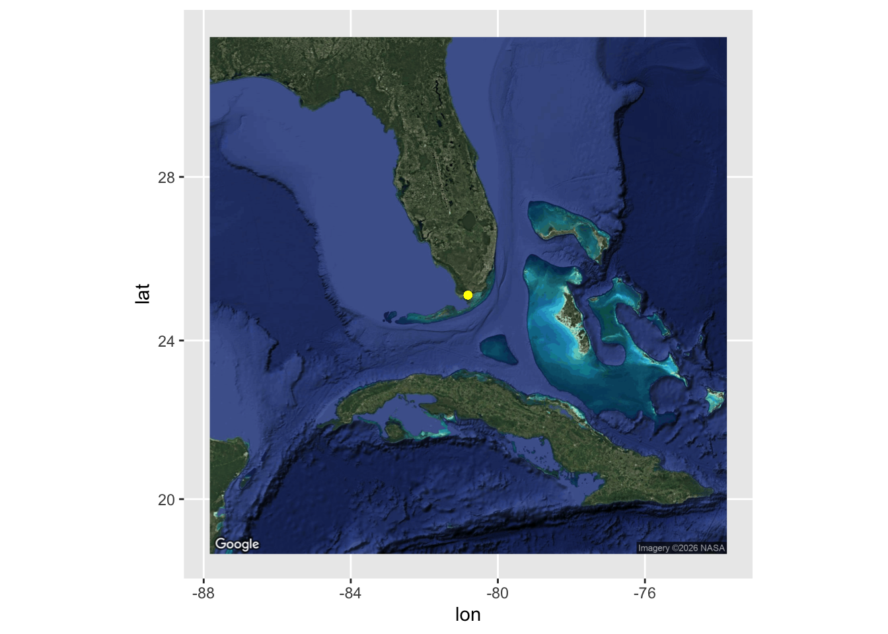
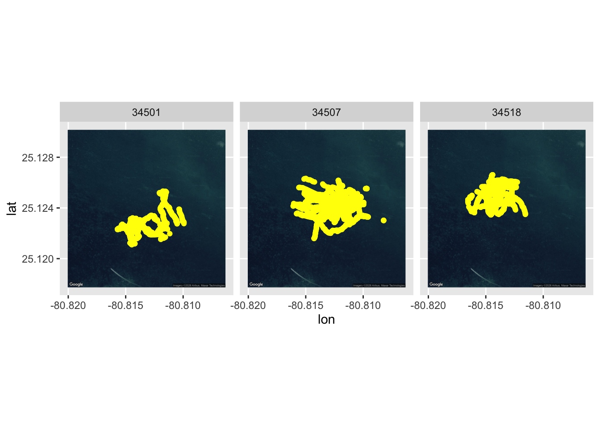

#Load in libraries
library(splitstackshape)
library(chron)
library(scales)
library(ggmap)
## Loading required package: ggplot2
## ℹ Google's Terms of Service: <https://mapsplatform.google.com>
## Stadia Maps' Terms of Service: <https://stadiamaps.com/terms-of-service>
## OpenStreetMap's Tile Usage Policy: <https://operations.osmfoundation.org/policies/tiles>
## ℹ Please cite ggmap if you use it! Use `citation("ggmap")` for details.
library(sf)
## Warning: package 'sf' was built under R version 4.5.2
## Linking to GEOS 3.13.0, GDAL 3.8.5, PROJ 9.5.1; sf_use_s2() is TRUE
library(tidyverse)
## ── Attaching core tidyverse packages ──────────────────────── tidyverse 2.0.0 ──
## ✔ dplyr 1.1.4 ✔ readr 2.1.5
## ✔ forcats 1.0.1 ✔ stringr 1.5.2
## ✔ lubridate 1.9.4 ✔ tibble 3.3.0
## ✔ purrr 1.1.0 ✔ tidyr 1.3.1
## ── Conflicts ────────────────────────────────────────── tidyverse_conflicts() ──
## ✖ readr::col_factor() masks scales::col_factor()
## ✖ lubridate::days() masks chron::days()
## ✖ purrr::discard() masks scales::discard()
## ✖ dplyr::filter() masks stats::filter()
## ✖ lubridate::hours() masks chron::hours()
## ✖ dplyr::lag() masks stats::lag()
## ✖ lubridate::minutes() masks chron::minutes()
## ✖ lubridate::seconds() masks chron::seconds()
## ✖ lubridate::years() masks chron::years()
## ℹ Use the conflicted package (<http://conflicted.r-lib.org/>) to force all conflicts to become errors
data <- sfheadersdata <- read_csv('data/fish_positions.csv')
## New names:
## Rows: 31389 Columns: 11
## ── Column specification
## ──────────────────────────────────────────────────────── Delimiter: "," dbl
## (8): ...1, tag, x, y, x_sd, y_sd, nobs, k lgl (2): z, z_sd dttm (1): ts
## ℹ Use `spec()` to retrieve the full column specification for this data. ℹ
## Specify the column types or set `show_col_types = FALSE` to quiet this message.
## • `` -> `...1`
head(data)
## # A tibble: 6 × 11
## ...1 tag ts x y z x_sd y_sd z_sd nobs
## <dbl> <dbl> <dttm> <dbl> <dbl> <lgl> <dbl> <dbl> <lgl> <dbl>
## 1 1 34518 2021-12-22 11:09:13 518709. 2778823. NA 0.724 1.54 NA 3
## 2 2 34518 2021-12-22 11:09:54 518710. 2778823. NA 1.26 1.65 NA 1
## 3 3 34518 2021-12-22 11:10:33 518711. 2778822. NA 1.18 1.52 NA 1
## 4 4 34518 2021-12-22 11:11:05 518712. 2778821. NA 0.586 1.18 NA 5
## 5 5 34518 2021-12-22 11:11:47 518711. 2778819. NA 1.06 1.10 NA 2
## 6 6 34518 2021-12-22 11:12:26 518711. 2778816. NA 0.539 1.02 NA 3
## # ℹ 1 more variable: k <dbl>YAPS and Data filtering
YAPS and Data filtering
This vignette uses the yaps package to calculate fish position and then goes over our process to filter the data. We then do some data mapping and exploration.
Data
The data used for this example was collected by Rodemann, Costa et al. in Florida Bay. Acoustic telemetry data is from tagged Spotted Seatrout (Cynoscion nebulosus) and environmental data is from field surveys done by Rodemann, Costa and team.

YAPS position calculations
This is the general workflow for syncing receivers and running tracks in YAPS. We won’t be running this code in this workshop and in fact, this code does not work because the syncing fails. In reality, you need to play around with your sync data (including splitting up the time periods if there are “blackouts”, possibly removing receivers, and other adjustments) for the sync model to be successful. We will pick up the workshop with the positions that were calculated by the developer of YAPS (WOW!), Henrik Baktoft.
#load libraries
#Install and load required libraries
install.packages(c(‘tidyverse’, ‘devtools’, ‘TMB’))
library(devtools)
library(tidyverse)
library(TMB)
devtools::install_github(“baktoft/yaps”)
library(yaps)
options(digits.secs = 3)
#test to make sure YAPS will work
testYaps()
#load data
vue <- data.table::fread(‘data/detections.csv’, fill=TRUE)
hydros <- data.table::fread(‘data/hydros.csv’, fill=TRUE)
detections <- prepDetections(raw_dat = vue, type=‘vemco_vue’)
detections <- detections %>% dplyr::filter(!is.na(frac))
#now we have our 2 datasets needed!
#sync hydrophones/ #set parameters
max_epo_diff <- 140 #Should be a little less than half of your shortest sync tag delay (ours are 6 - 10 minute)
min_hydros <- 4 #minimum amount of hydrophones needed for each sync tag ping to be heard on. Start high, then go low
time_keeper_idx <- 13 #Receiver with the “best clock”
fixed_hydros_idx <- c(3, 7:8, 11, 13:17, 20:21) #Receivers that have the best known positions. The more, the better
n_offset_day <- 2 #1 or 2
n_ss_day <- 2 #number of times you want the model to calculate speed of sound a day. 2 is good, best to use water temp if you have it
keep_rate <- 75 #number of sync tag detections for each hydro X offset_idx combinations to keep. Keeps the model doable
#compile list of dataframes
RYAPS <- list(hydros, detections)
names(RYAPS) <- c(‘hydros’, ‘detections’)
RYAPS$hydros$sync_tag <- as.double(RYAPS$hydros$sync_tag)
RYAPS$detections$tag <- as.integer(RYAPS$detections$tag)
RYAPS$detections$epo <- as.integer(RYAPS$detections$epo)
RYAPS$detections$serial <- as.integer(RYAPS$detections$serial)
#compile data for syncing
inp_sync <- getInpSync(sync_dat = RYAPS, max_epo_diff, min_hydros, time_keeper_idx, fixed_hydros_idx, n_offset_day, n_ss_day, keep_rate)
#check if it is good
getSyncCoverage(inp_sync, plot=T)
#we are good. Let’s try syncing
sync_model <- getSyncModel(inp_sync, silent=TRUE)
#check quality of synchronization
plotSyncModelResids(sync_model, by=‘overall’)
plotSyncModelResids(sync_model, by=‘sync_tag’)
plotSyncModelResids(sync_model, by=‘hydro’)
plotSyncModelCheck(sync_model, by=“sync_bin_sync”)
plotSyncModelCheck(sync_model, by=“sync_bin_hydro”)
plotSyncModelCheck(sync_model, by=“sync_tag”)
plotSyncModelCheck(sync_model, by=“hydro”)
#success! there is only a problem of 6 using SHYAPS1. I think it is fine. save it
save(sync_model, file = ‘sync_model_4’)
#apply sync model to detection data
detections_synced <- applySync(toa=RYAPS$detections, hydros=RYAPS$hydros, sync_model)
#Now that you have the sync model, run the tracks
#use the estimated positions of hydros
hydros_yaps <- data.table::data.table(sync_model$pl$TRUE_H)
colnames(hydros_yaps) <- c(‘hx’,‘hy’,‘hz’)
#specify focal tag
focal_tag <- 34507
rbi_min <- 20
rbi_max <- 40
#extract relevant tag data from detections
synced_dat_34507 <- detections_synced[tag == focal_tag]
#compile TOA matrix
toa_YAPS_34507 <- getToaYaps(synced_dat_34507, hydros_yaps, rbi_min, rbi_max, pingType=‘rbi’)
#compile all input data needed
inp_YAPS <- getInp(hydros_yaps, toa_YAPS_34507, E_dist=“Mixture”, n_ss=3, pingType=“rbi”, sdInits=1, rbi_min=rbi_min, rbi_max=rbi_max, ss_data_what=“est”, ss_data=0)
inp_YAPS$datTmb$rbi_min
inp_YAPS$params$top
min(diff(inp_YAPS$params$top))
checkInp(inp_YAPS)
#run YAPS!
yaps_out_34507 <- runYaps(inp_SAPS, silent=F)
plotYaps(yaps_out_34507)
#This is where we will leave it for the YAPS run. We encourage all of you if you are interested to explore the package, as it can even run simulations! Now onto the data exploration and filtering
Data filtering, exploration and graphing
In this section, we will look at the data, filter it based on the positional error from the YAPS algorithm, explore the data, and then graph it as an abacus plot (yay!) as well as on a map. Then we will prep it for the HMM analysis.
The columns of this data include tag (last digits of tag number), x (longitude in UTM), y (latitude in UTM), x_sd (standard deviation (error) of longitude in meters), y_sd (standard deviation (error) of latitude in meters), z_sd (standard deviation (error) of depth in meters - not applicable), nobs (number of receivers detected on), and k (positions that represent a track)
Decision on allowable error and abacus plot
The first big decision is determining how much error is acceptable within the positions calculated with the YAPS algorithm. This will play into the resolution of your environmental variables as well as how well you can interpret your results. In general, it is a trade-off between maximizing the amount of data while minimizing the amount of error. We are filtering it at a total error of 10 m, which will come into play with our environmental variables.
#make a column with total error
data <- data %>%
mutate(E = sqrt(x_sd^2 + y_sd^2))
#filter by error. We are going to filter out anything with an error greater than 10 m. This will have to match your environmental variables later
dat_10 <- data %>% filter(E < 10)
#summary stats
#number of positions per fish
dat_10 %>% group_by(tag) %>% summarize(n = n())
## # A tibble: 3 × 2
## tag n
## <dbl> <int>
## 1 34501 4036
## 2 34507 8427
## 3 34518 3287
#abacus plot for positions
dat_10$ts <- as.POSIXct(dat_10$ts, format = '%Y-%m-%dT%H:%M:%OS')
# Break up the new datetime column into a date, and a time
data <- dat_10
data$Date_Time2 <- data$ts
data <- cSplit(data, "Date_Time2", sep = " ", type.convert = F)
head(data)
## ...1 tag ts x y z x_sd y_sd z_sd
## <num> <num> <POSc> <num> <num> <lgcl> <num> <num> <lgcl>
## 1: 1 34518 2021-12-22 11:09:13 518708.7 2778823 NA 0.7236 1.5422 NA
## 2: 2 34518 2021-12-22 11:09:54 518709.7 2778823 NA 1.2561 1.6490 NA
## 3: 3 34518 2021-12-22 11:10:33 518710.7 2778822 NA 1.1799 1.5173 NA
## 4: 4 34518 2021-12-22 11:11:05 518711.5 2778821 NA 0.5856 1.1773 NA
## 5: 5 34518 2021-12-22 11:11:47 518710.9 2778819 NA 1.0556 1.0991 NA
## 6: 6 34518 2021-12-22 11:12:26 518710.6 2778816 NA 0.5386 1.0217 NA
## nobs k E Date_Time2_1 Date_Time2_2
## <num> <num> <num> <char> <char>
## 1: 3 6833 1.703519 2021-12-22 11:09:13.605054
## 2: 1 6833 2.072918 2021-12-22 11:09:54.728734
## 3: 1 6833 1.922073 2021-12-22 11:10:33.044458
## 4: 5 6833 1.314900 2021-12-22 11:11:05.742057
## 5: 2 6833 1.523913 2021-12-22 11:11:47.25653
## 6: 3 6833 1.154972 2021-12-22 11:12:26.354912
# Rename columns so they make sense, it'll just be your last 2 column numbers, in this case the 15th and 16th column s
colnames(data)[12:14]<-c('E', "Date", "Time")
head(data)
## ...1 tag ts x y z x_sd y_sd z_sd
## <num> <num> <POSc> <num> <num> <lgcl> <num> <num> <lgcl>
## 1: 1 34518 2021-12-22 11:09:13 518708.7 2778823 NA 0.7236 1.5422 NA
## 2: 2 34518 2021-12-22 11:09:54 518709.7 2778823 NA 1.2561 1.6490 NA
## 3: 3 34518 2021-12-22 11:10:33 518710.7 2778822 NA 1.1799 1.5173 NA
## 4: 4 34518 2021-12-22 11:11:05 518711.5 2778821 NA 0.5856 1.1773 NA
## 5: 5 34518 2021-12-22 11:11:47 518710.9 2778819 NA 1.0556 1.0991 NA
## 6: 6 34518 2021-12-22 11:12:26 518710.6 2778816 NA 0.5386 1.0217 NA
## nobs k E Date Time
## <num> <num> <num> <char> <char>
## 1: 3 6833 1.703519 2021-12-22 11:09:13.605054
## 2: 1 6833 2.072918 2021-12-22 11:09:54.728734
## 3: 1 6833 1.922073 2021-12-22 11:10:33.044458
## 4: 5 6833 1.314900 2021-12-22 11:11:05.742057
## 5: 2 6833 1.523913 2021-12-22 11:11:47.25653
## 6: 3 6833 1.154972 2021-12-22 11:12:26.354912
# Then I repeat this and parse the date into year, month, and day (then hour, minute, second), so I can easily subset by year
# Copy date to parse out, maintain original date
data$Date2 <- data$Date
data<-cSplit(data, "Date2", sep = "-", type.convert = FALSE)
head(data)
## ...1 tag ts x y z x_sd y_sd z_sd
## <num> <num> <POSc> <num> <num> <lgcl> <num> <num> <lgcl>
## 1: 1 34518 2021-12-22 11:09:13 518708.7 2778823 NA 0.7236 1.5422 NA
## 2: 2 34518 2021-12-22 11:09:54 518709.7 2778823 NA 1.2561 1.6490 NA
## 3: 3 34518 2021-12-22 11:10:33 518710.7 2778822 NA 1.1799 1.5173 NA
## 4: 4 34518 2021-12-22 11:11:05 518711.5 2778821 NA 0.5856 1.1773 NA
## 5: 5 34518 2021-12-22 11:11:47 518710.9 2778819 NA 1.0556 1.0991 NA
## 6: 6 34518 2021-12-22 11:12:26 518710.6 2778816 NA 0.5386 1.0217 NA
## nobs k E Date Time Date2_1 Date2_2 Date2_3
## <num> <num> <num> <char> <char> <char> <char> <char>
## 1: 3 6833 1.703519 2021-12-22 11:09:13.605054 2021 12 22
## 2: 1 6833 2.072918 2021-12-22 11:09:54.728734 2021 12 22
## 3: 1 6833 1.922073 2021-12-22 11:10:33.044458 2021 12 22
## 4: 5 6833 1.314900 2021-12-22 11:11:05.742057 2021 12 22
## 5: 2 6833 1.523913 2021-12-22 11:11:47.25653 2021 12 22
## 6: 3 6833 1.154972 2021-12-22 11:12:26.354912 2021 12 22
colnames(data)[15:17]<-c("Year", "Month", "Day")
head(data)
## ...1 tag ts x y z x_sd y_sd z_sd
## <num> <num> <POSc> <num> <num> <lgcl> <num> <num> <lgcl>
## 1: 1 34518 2021-12-22 11:09:13 518708.7 2778823 NA 0.7236 1.5422 NA
## 2: 2 34518 2021-12-22 11:09:54 518709.7 2778823 NA 1.2561 1.6490 NA
## 3: 3 34518 2021-12-22 11:10:33 518710.7 2778822 NA 1.1799 1.5173 NA
## 4: 4 34518 2021-12-22 11:11:05 518711.5 2778821 NA 0.5856 1.1773 NA
## 5: 5 34518 2021-12-22 11:11:47 518710.9 2778819 NA 1.0556 1.0991 NA
## 6: 6 34518 2021-12-22 11:12:26 518710.6 2778816 NA 0.5386 1.0217 NA
## nobs k E Date Time Year Month Day
## <num> <num> <num> <char> <char> <char> <char> <char>
## 1: 3 6833 1.703519 2021-12-22 11:09:13.605054 2021 12 22
## 2: 1 6833 2.072918 2021-12-22 11:09:54.728734 2021 12 22
## 3: 1 6833 1.922073 2021-12-22 11:10:33.044458 2021 12 22
## 4: 5 6833 1.314900 2021-12-22 11:11:05.742057 2021 12 22
## 5: 2 6833 1.523913 2021-12-22 11:11:47.25653 2021 12 22
## 6: 3 6833 1.154972 2021-12-22 11:12:26.354912 2021 12 22
data$Time2 <- data$Time
data <-cSplit(data, "Time2", sep = ":", type.convert = FALSE)
head(data)
## ...1 tag ts x y z x_sd y_sd z_sd
## <num> <num> <POSc> <num> <num> <lgcl> <num> <num> <lgcl>
## 1: 1 34518 2021-12-22 11:09:13 518708.7 2778823 NA 0.7236 1.5422 NA
## 2: 2 34518 2021-12-22 11:09:54 518709.7 2778823 NA 1.2561 1.6490 NA
## 3: 3 34518 2021-12-22 11:10:33 518710.7 2778822 NA 1.1799 1.5173 NA
## 4: 4 34518 2021-12-22 11:11:05 518711.5 2778821 NA 0.5856 1.1773 NA
## 5: 5 34518 2021-12-22 11:11:47 518710.9 2778819 NA 1.0556 1.0991 NA
## 6: 6 34518 2021-12-22 11:12:26 518710.6 2778816 NA 0.5386 1.0217 NA
## nobs k E Date Time Year Month Day Time2_1
## <num> <num> <num> <char> <char> <char> <char> <char> <char>
## 1: 3 6833 1.703519 2021-12-22 11:09:13.605054 2021 12 22 11
## 2: 1 6833 2.072918 2021-12-22 11:09:54.728734 2021 12 22 11
## 3: 1 6833 1.922073 2021-12-22 11:10:33.044458 2021 12 22 11
## 4: 5 6833 1.314900 2021-12-22 11:11:05.742057 2021 12 22 11
## 5: 2 6833 1.523913 2021-12-22 11:11:47.25653 2021 12 22 11
## 6: 3 6833 1.154972 2021-12-22 11:12:26.354912 2021 12 22 11
## Time2_2 Time2_3
## <char> <char>
## 1: 09 13.605054
## 2: 09 54.728734
## 3: 10 33.044458
## 4: 11 05.742057
## 5: 11 47.25653
## 6: 12 26.354912
colnames(data)[18:20]<-c("Hour", "Minute", "Second")
head(data)
## ...1 tag ts x y z x_sd y_sd z_sd
## <num> <num> <POSc> <num> <num> <lgcl> <num> <num> <lgcl>
## 1: 1 34518 2021-12-22 11:09:13 518708.7 2778823 NA 0.7236 1.5422 NA
## 2: 2 34518 2021-12-22 11:09:54 518709.7 2778823 NA 1.2561 1.6490 NA
## 3: 3 34518 2021-12-22 11:10:33 518710.7 2778822 NA 1.1799 1.5173 NA
## 4: 4 34518 2021-12-22 11:11:05 518711.5 2778821 NA 0.5856 1.1773 NA
## 5: 5 34518 2021-12-22 11:11:47 518710.9 2778819 NA 1.0556 1.0991 NA
## 6: 6 34518 2021-12-22 11:12:26 518710.6 2778816 NA 0.5386 1.0217 NA
## nobs k E Date Time Year Month Day Hour
## <num> <num> <num> <char> <char> <char> <char> <char> <char>
## 1: 3 6833 1.703519 2021-12-22 11:09:13.605054 2021 12 22 11
## 2: 1 6833 2.072918 2021-12-22 11:09:54.728734 2021 12 22 11
## 3: 1 6833 1.922073 2021-12-22 11:10:33.044458 2021 12 22 11
## 4: 5 6833 1.314900 2021-12-22 11:11:05.742057 2021 12 22 11
## 5: 2 6833 1.523913 2021-12-22 11:11:47.25653 2021 12 22 11
## 6: 3 6833 1.154972 2021-12-22 11:12:26.354912 2021 12 22 11
## Minute Second
## <char> <char>
## 1: 09 13.605054
## 2: 09 54.728734
## 3: 10 33.044458
## 4: 11 05.742057
## 5: 11 47.25653
## 6: 12 26.354912
# Assign classes so data plays nice for plotting and summaries
data$Date <- as.Date(data$Date)
data$Time <- as.times(data$Time)
data$Year <- as.numeric(data$Year)
data$Month <- as.numeric(data$Month)
data$Day <- as.numeric(data$Day)
data$Hour <- as.numeric(data$Hour)
data$Minute <- as.numeric(data$Minute)
data$Second <- as.numeric(data$Second)
data$tag <- as.factor(data$tag)
data$ts <- as.POSIXct(data$ts, format='%Y-%m-%d %H:%M:%S', tz='America/New_York')
head(data)
## ...1 tag ts x y z x_sd y_sd
## <num> <fctr> <POSc> <num> <num> <lgcl> <num> <num>
## 1: 1 34518 2021-12-22 06:09:13 518708.7 2778823 NA 0.7236 1.5422
## 2: 2 34518 2021-12-22 06:09:54 518709.7 2778823 NA 1.2561 1.6490
## 3: 3 34518 2021-12-22 06:10:33 518710.7 2778822 NA 1.1799 1.5173
## 4: 4 34518 2021-12-22 06:11:05 518711.5 2778821 NA 0.5856 1.1773
## 5: 5 34518 2021-12-22 06:11:47 518710.9 2778819 NA 1.0556 1.0991
## 6: 6 34518 2021-12-22 06:12:26 518710.6 2778816 NA 0.5386 1.0217
## z_sd nobs k E Date Time Year Month Day Hour
## <lgcl> <num> <num> <num> <Date> <times> <num> <num> <num> <num>
## 1: NA 3 6833 1.703519 2021-12-22 11:09:14 2021 12 22 11
## 2: NA 1 6833 2.072918 2021-12-22 11:09:55 2021 12 22 11
## 3: NA 1 6833 1.922073 2021-12-22 11:10:33 2021 12 22 11
## 4: NA 5 6833 1.314900 2021-12-22 11:11:06 2021 12 22 11
## 5: NA 2 6833 1.523913 2021-12-22 11:11:47 2021 12 22 11
## 6: NA 3 6833 1.154972 2021-12-22 11:12:26 2021 12 22 11
## Minute Second
## <num> <num>
## 1: 9 13.605054
## 2: 9 54.728734
## 3: 10 33.044458
## 4: 11 5.742057
## 5: 11 47.256530
## 6: 12 26.354912
fish_det <- ggplot(data,aes(ts, tag)) +
geom_point() +
scale_x_datetime(labels = date_format("%Y-%m-%d"),
date_breaks = "2 weeks", limits = as.POSIXct(c('2021-12-15 00:00:00', '2022-05-10 00:00:00')))+
labs(x = "Date", y = "Transmitter") +
theme_bw()+
theme(axis.text.x=element_text(angle= 50, size=10, vjust = 1, hjust=1),panel.grid.major = element_blank(), panel.grid.minor = element_blank()) +
theme(axis.text.y=element_text(size=8))+
labs(title = "Trout Detections YAPS")
fish_det
Mapping!
#We need to make the data into a spatial dataframe to graph onto a map
sfdat <- data %>%
st_as_sf(coords = c('x', 'y')) %>%
st_set_crs(2958) %>%
st_transform(4326) %>%
mutate(
long = st_coordinates(.)[, 1],
lat = st_coordinates(.)[, 2])
#Fok, let's plot this in ggmap to get our bearings
# Note,a API key from Google Maps is required to load the map and run the below code. Visit https://rpubs.com/ktcross/1154003 for instructions on how to install and run ggamps in R
# For now, we will use the already saved maps but the code to generate the maps if you have an existing API code is below as well.
# FLmap_zoom_out <- get_googlemap(center = c(lon=mean(sfdat$long), lat=mean(sfdat$lat)),
# zoom = 6,
# maptype = c("satellite"))
load("data/FLmap_zoom_out.RData")
ggmap(FLmap_zoom_out, extent='normal') +
geom_point(data = sfdat,
aes(x = long, y = lat), col ="yellow") 
# FLmap_zoom_in <- get_googlemap(center = c(lon=mean(sfdat$long), lat=mean(sfdat$lat)),
# zoom = 16,
# maptype = c("satellite"))
load("data/FLmap_zoom_in.RData")
ggmap(FLmap_zoom_in, extent='normal') +
geom_point(data = sfdat,
aes(x = long, y = lat,), col ="yellow") +
facet_wrap(~tag)
Calculating tracks
The most important part to set up for the HMMs is differentiating the tracks. This is where the second big decision comes in. How long do you wait between position before it is a new track? Depends on your array design, tag specifications, and the biology of your organism. We are using a cut-off of 5 minutes because our tags have an average burst interval of 20-40 seconds, meaning the fish would have to miss 10 detections (and therefore left the array).
#So now we know where we are in space. Let's now set up the tracks for the HMM analysis
#We are going to filter it even more so that each position we keep is calculated by detections heard by 2 or more receivers
dat20 <- data %>% dplyr::filter(nobs >= 2)
#Now we are going to create a column that allows us to identify the start of a new track
#for this exercise, we decided that if the fish was not detected for 5 minutes, a new track would be created
dat20t <- dat20 %>% group_by(tag) %>% mutate(trackstart = ifelse(as.numeric(unclass(ts)-unclass(lag(ts))) > 300, 'Y', 'N')) %>% ungroup()
dat20t[is.na(dat20t)] <- 'Y'
str(dat20t)
## tibble [8,436 × 21] (S3: tbl_df/tbl/data.frame)
## $ ...1 : num [1:8436] 1 4 5 6 7 8 9 10 12 13 ...
## $ tag : Factor w/ 3 levels "34501","34507",..: 3 3 3 3 3 3 3 3 3 3 ...
## $ ts : POSIXct[1:8436], format: "2021-12-22 06:09:13" "2021-12-22 06:11:05" ...
## $ x : num [1:8436] 518709 518712 518711 518711 518711 ...
## $ y : num [1:8436] 2778823 2778821 2778819 2778816 2778814 ...
## $ z : chr [1:8436] "Y" "Y" "Y" "Y" ...
## $ x_sd : num [1:8436] 0.724 0.586 1.056 0.539 0.534 ...
## $ y_sd : num [1:8436] 1.54 1.18 1.1 1.02 1.01 ...
## $ z_sd : chr [1:8436] "Y" "Y" "Y" "Y" ...
## $ nobs : num [1:8436] 3 5 2 3 3 3 3 2 2 5 ...
## $ k : num [1:8436] 6833 6833 6833 6833 6833 ...
## $ E : num [1:8436] 1.7 1.31 1.52 1.15 1.14 ...
## $ Date : Date[1:8436], format: "2021-12-22" "2021-12-22" ...
## $ Time : 'times' num [1:8436] 11:09:14 11:11:06 11:11:47 11:12:26 11:13:01 ...
## ..- attr(*, "format")= chr "h:m:s"
## $ Year : num [1:8436] 2021 2021 2021 2021 2021 ...
## $ Month : num [1:8436] 12 12 12 12 12 12 12 12 12 12 ...
## $ Day : num [1:8436] 22 22 22 22 22 22 22 22 22 22 ...
## $ Hour : num [1:8436] 11 11 11 11 11 11 11 11 11 11 ...
## $ Minute : num [1:8436] 9 11 11 12 13 13 14 14 15 16 ...
## $ Second : num [1:8436] 13.61 5.74 47.26 26.35 0.61 ...
## $ trackstart: chr [1:8436] "Y" "N" "N" "N" ...
#create a column that we can put track numbers in
dat20tt <- dat20t %>% group_by(tag) %>% mutate(track = ifelse(row_number() == 1, 1, NA)) %>% ungroup()
#create a function that numbers the tracks and inputs what track each row is in
tracknum1 <- function(x){
for (i in 2:nrow(x)){
if (x$trackstart[i] == 'Y'){
x$track[i] <- x$track[i-1]+1
} else {
x$track[i] <- x$track[i-1]
}
}
x
}
#apply across the data
dat_HMM <- dat20tt %>% group_by(tag) %>% group_modify(~tracknum1(.x)) %>% ungroup()
## New names:
## New names:
## New names:
## • `...1` -> `...2`
head(dat_HMM)
## # A tibble: 6 × 22
## tag ...2 ts x y z x_sd y_sd z_sd nobs
## <fct> <dbl> <dttm> <dbl> <dbl> <chr> <dbl> <dbl> <chr> <dbl>
## 1 34501 1192 2022-02-04 06:32:09 518866. 2778477. Y 0.524 1.45 Y 8
## 2 34501 1194 2022-02-04 06:33:11 518861. 2778481. Y 2.69 3.05 Y 2
## 3 34501 1195 2022-02-04 06:33:40 518861. 2778481. Y 3.02 3.36 Y 2
## 4 34501 1197 2022-02-04 06:35:06 518860. 2778480. Y 3.17 3.59 Y 2
## 5 34501 1200 2022-02-04 06:36:44 518858. 2778481. Y 1.32 3.86 Y 2
## 6 34501 1202 2022-02-04 06:37:58 518859. 2778481. Y 0.705 2.41 Y 3
## # ℹ 12 more variables: k <dbl>, E <dbl>, Date <date>, Time <times>, Year <dbl>,
## # Month <dbl>, Day <dbl>, Hour <dbl>, Minute <dbl>, Second <dbl>,
## # trackstart <chr>, track <dbl>
##Now we have the data we need for the HMMs!We can now move to running the HMMs! See you in that module!